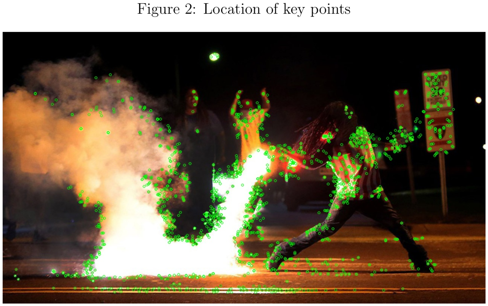
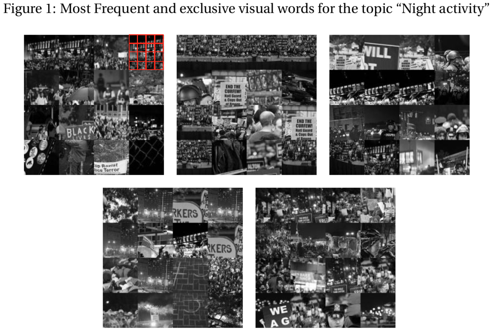

Framing a Protest
Determinants and Effects of Visual Frames by Michelle Torres
Clear argument and writing
Great leap in methods
Combines cutting-edge tools to discover patterns + experimental evidence about causal effects
Summary
1. Visual topic model
Conservative media –> more image features we might call “night” (dark, high-contrast)
Summary of thoughts:
- More from the topic model?
- More direct tests?
=> Discovering vs. testing for mood vs. environment vs. objects
2. Experimental findings
Peaceful image –> no effect on efficacy or support, but more objection to police violence
Protestor violence –> less efficacy, less support
Police violence –> less efficacy, less support? . . .
Images > words, except for “the police went too far”
Summary of thoughts:
- More integration of computer vision and experiment sections?
- Combine samples for both experiments?
- What are the mechanisms?
- What would we find in other contexts?
Visual topic model


BoVW method (Torres 2018)
- select key point (edges and corners, sharp changes in color, i.e. not background, sky, street, wall, etc.)
- characterize gradients for pixels around those key points
- assign it to nearest Visual Word (“vocabulary” cluster centroid)
=> sharp gradients (brightness, contrast), possibly shapes, objects?
Task
“identify topics providing information about the time and place in which the protests occurred (e.g. night)”
Suggestion: Keep background (skip the key point step) to retain environmental features (e.g. night vs. day sky)?
Exploring data, testing hypotheses
“test the expectation that conservative newspapers are more likely to use nocturnal frames”
Simpler Task: How to measure “night” in images?
Suggestions:
- Inspect topic models with different \(k\)s, pick one with the most “nocturnal-looking” topic.
- Identify the “most nocturnal” topic or topics in many models, average proportions.
- Discover patterns, design more direct tests features of interest (observational or experimental)
- e.g. dark and high contrast images
- Model environmental and mood latent feature structure simultaniously with object features
Are image fragments draws from a distribution of “night” or “something else” with a probability that varies by image?
Or are image fragments draws from a distribution of objects that vary (in brightness and contrast) depending on whether they are drawn from a “night” or “day” image?
Can we model mood variation (in global tint, brightness, contrast) alongside object clusters (local variation, edges, corners, etc. at key points)?
If we can model night/day variation, we could identify variation in what is depicted at night and day?
Regardless of exploratory or testing use of topic models, we all should report in appendicies:
- all topics for models used (e.g. top words via FREX)
- models with different \(k\)s
Topic proportions are conditional on other topics (and thus also \(k\))

What else pops out?
Can topic models recover anything we might label with the concepts tested experimentally?
For example, can you recover latent dimensions for
peaceful vs. violent features? - e.g. crowds (✓) vs. flames (?)
police violence vs. protestor violence features? - e.g. riot gear objects vs. broken glass objects
(perhaps a better task for CNNs or other supervised methods using object libraries)
Next steps?
- Mechanisms
There are a lot of potential mechanisms here. You are clearly thinking about this, but perhaps some of my thoughts about disentangling mechanisms will be useful if you go further down this path.
- Other movements
Minor tweaks to this paper’s framing could leave the door open for different findings for reactionary movement protests.
Variables
Viewer: - disposition (equality, hierarchical structures and need for order) - social context?
What is shown: - violence + intensity + object/direction + against people or property? - protest content?
How it is shown: - color tint?
Expectations about mechanisms
Expectation about night / dark framing
A bunch of related expectations:
- Night
- Image brightness
- High contrast
- Greyscale and redscale?
“protest paradigm” - deviant, threatening, imponent
Expectations about violence
Logics of consequences: risk vs. benefit (?) - safety - likelihood of success
Logics of appropriateness: ideological and social distance - legitimacy of tactics - assumption that police start violence (x) - assumption that protestors start violence (?) - legitimacy of claims/proof of injustice (x) - compassion/indignation (x)
Valence (?) - negitivity (discomfort, anxiety, linked with crime) - arrousal
Expectations about attitudes
“higher levels of hierarchy-enhancing attitudes to be less susceptible to visual frames of violence in protests and to overall report negative perceptions”
Police violence? (Riot gear, bodies on the ground)
Pro-hierarchy protest? (Swasticas, blue line flags)
Protestor on protestor violence?
Symbolic violence (Guns, flags, symbols)
Property damage vs. violence? - blood, teargas, or ambulance (bodily injury) vs. fire or broken glass (property damage)
Other small notes:
- I am not exactly sure what “fairness” means on page 5. Perhaps that a perception that there is a problem implies that the status quo is unfair?
- Minor typo on page 5 “participation at in social movements.”
- On page 10, by “initialized with 12 topics,” you just mean that you set \(k=12\) or do you mean that some algorithm chose \(k\), but you initialized it with a prior of \(12\)?
- Figure 3 is labeled “Topics”. . .should be “Night activity topic,” right?
- The intro to section 4 starts with a second lit review. This is unconventional, and the paper may be better integrated by combining
- On page 24, I would not say that they trust the text more, just that the text undermined a baseline assumption that protestors start violence, whereas the image was more open to interpretation. This is evidence for blame/identity hypotheses over cost-benefit hypothesis.